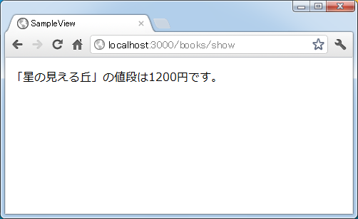

インスタンス変数を使ってテンプレートへ値を渡す
アクションではモデルなどを使ってデータベースから必要なデータを取得します。そのデータを使って利用者へ返す結果を作成するにはテンプレートを使用しますが、アクションが取得したデータをテンプレートへ渡すにはインスタント変数を使います。ここではインスタンス変数を介したデータのやり取りの方法について解説します。
アクションからテンプレートに値を渡すには、アクションメソッドの中でインスタンス変数に値を設定します。(インスタンス変数については「インスタンス変数」を参照して下さい)。
class BooksController < ApplicationController
def show
@変数名1 = 値1
@変数名2 = 値2
end
end
インスタンス変数の変数名は「@」で始まります。例えば「@name」などです。
アクションから呼び出されたテンプレートでは、呼び出し元のアクションで定義されたインスタンス変数を参照して値を取り出すことができます。
<p> 本の値段は<%= @変数名1 * 1.05 %>円です。 </p> <p> 本のタイトルは<%= @変数名2 %>です。 </p>
アクションでは利用者からのリクエストに従ってデータベースから取得したデータをインスタンス変数に設定したり、または利用者から送られて来た処理を行った結果についてインスタンス変数に設定し、その後でテンプレートを呼び出します。テンプレートでは定義されたインスタンス変数に格納された値を取り出し、データベースのデータを表にしたり、処理した結果に従って表示する内容を変更したりします。
では実際に試してみます。「books」コントロールの中に「show」アクションメソッドを次のように記述します。
# coding: utf-8
class BooksController < ApplicationController
def show
@title = '星の見える丘'
@price = 1200
end
end
「books」コントロールの「show」アクションから呼び出されるテンプレートとして「app/views/books/show.html.erb」ファイルを作成し、次のように記述しました。
<% price = 2500 * 1.05 %> <p> 「<%= @title %>」の値段は<%= @price %>円です。 </p>
ルーティングの設定として「config/routes.rb」ファイルに次のように記述しました。
SampleView::Application.routes.draw do get "books/show" end
ではアプリケーションを起動し「books」コントロールの「show」アクションを呼び出してみます。すると次のように結果がブラウザに表示されました。

このようにアクションからインスタンス変数を経由してテンプレートへ値を渡すことができました。
( Written by Tatsuo Ikura )

著者 / TATSUO IKURA
初心者～中級者の方を対象としたプログラミング方法や開発環境の構築の解説を行うサイトの運営を行っています。